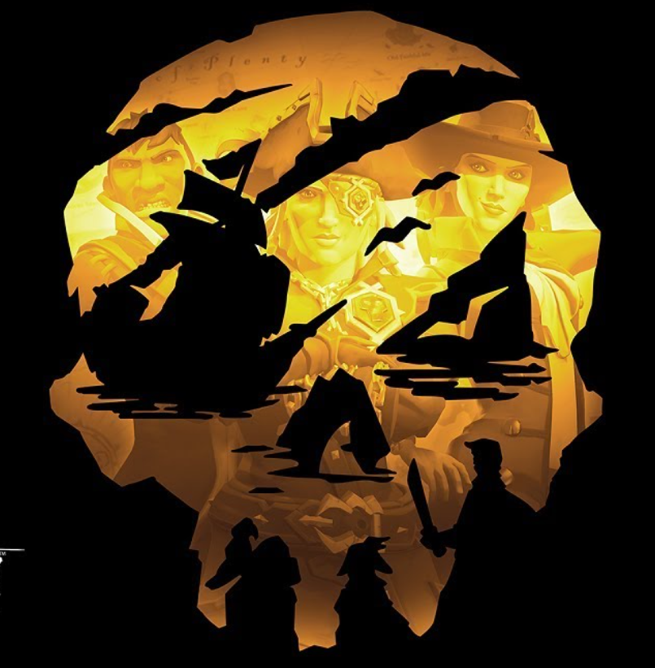

Dans Sea of Thieves vous n'êtes point le seul etre humain de ces mers à vouloir faire fortune vous y rencontrer moultes faction qui n'ont qu'un but accomplir leur objectif et vous êtes là pour les aider à accomplir ce but car tout du long du jeu à chaque apparition vous apparaitrer sur un avant-poste ou presque tout ces factions se trouvent
Les Collectionneurs sont avares et adorateurs d'or et leurs interets regorgent là ou se trouvent le plus de cette merveille dorée. Ne quittant jamais leur tente verte et dorée il vous accueillront toujours a bras ouvert quand il s'agit d'un coffre rempli de fortune
Tout comme dans notre propre histoire humaine il y a toujours des marchands pour s'emparer des ressources et les faires transister et c'est donc pour ça que nous retrouvont aussi une alliance de marchand dans Sea Of Thieves qui ont pour rôles l'exportation et l'importation des matières premières de La Mer Des Voleurs
Les mers de sea of thieves ne sont pas des eaux paisibles car elles émanent des forces magiques qui intéressent fortement l'ordre des amês c'est une faction cherchent à percer les mystères de ces mers mais qui pour celà auras besoin de tout objet peu orthodoxe que vous trouverait durant votre aventure
Il existe en ces eaux une faction étrange et qui n'est composée que des meilleurs pirates. Ce sont eux-même qui auront la chance de créer leur légende en perçant les mystéres les plus profonds et en raflant les trésors les plus somputueux mais aussi les plus dangeureux a aller dérober.